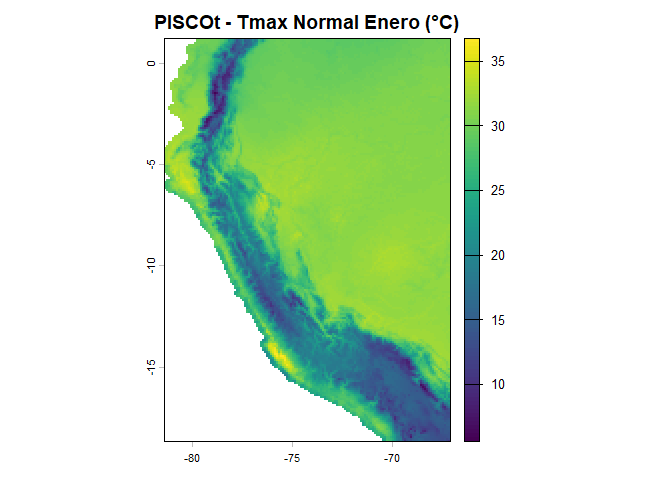
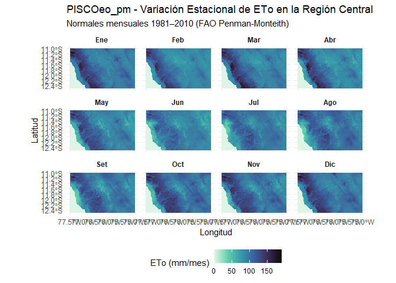
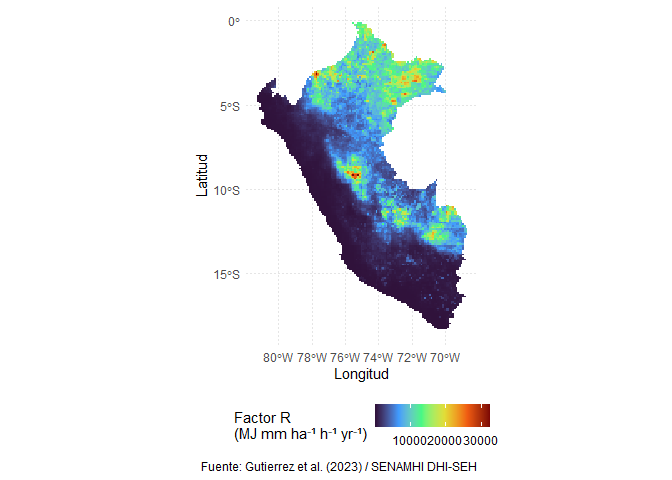

El paquete rpisco proporciona acceso programático, descarga con verificación de integridad, gestión de caché local, procesamiento geoespacial, análisis temporal y métricas de validación para la familia completa de datos climáticos e hidrológicos de alta resolución para el Perú: PISCO (Peruvian Interpolated data of the SENAMHI’s Climatological and hydrological Observations), desarrollados por la Subdirección de Modelación Numérica de la Atmósfera y la Dirección de Hidrología del Servicio Nacional de Meteorología e Hidrología del Perú (SENAMHI DHI-SEH).
Portal oficial del SENAMHI DHI-SEH: https://sites.google.com/view/dhi-seh/pisco
Ecosistema de Datos PISCO Disponibles en R
A través de rpisco, puedes consultar el catálogo, descargar, cargar en memoria y analizar directamente en terra y sf todos los productos desarrollados por SENAMHI DHI-SEH y colaboradores:
| Familia de Variable | Producto | Resolución | Cobertura Temporal | Formato | Variables / Contenido | Referencia Principal |
|---|---|---|---|---|---|---|
| Precipitación | PISCOp v3.0 | 0.10° (~10 km) | 1981–2025 | NetCDF (.nc) |
Diario (mm/día), mensual (mm/mes), climatología 1991–2015 |
Gutierrez & Lavado-Casimiro (2025) |
| Precipitación | PISCOp_h | 0.25° (~27 km) | 1981–2023 | NetCDF (.nc) |
Grilla gruesa diaria para modelos macroescalares | SENAMHI DHI-SEH |
| Temperatura | PISCOt v1.2 | 0.10° (~10 km) | 1981–2016 | NetCDF (.nc) |
Tmax y Tmin diaria, mensual y normales climatológicas (°C) | Aybar et al. (2020) |
| Evapotranspiración | PISCOeo_pm | 0.10° (~10 km) | 1981–2016 | NetCDF (.nc) |
ETo de referencia (FAO-56 Penman-Monteith) diaria, mensual y normal | Huertas et al. (2021) |
| Erosividad de Lluvia | PISCO_reed v1.0 | 0.10° (~10 km) | 1981–2016 | NetCDF (.nc) |
Factor R de RUSLE: mapa normal y serie anual () | Paca et al. (2020) |
| Caudales y Cuencas | PISCO_HyM (GR2M) | 0.10° + vector | 1981–2016 | NetCDF + GPKG | Caudal mensual grillado () y capas vectoriales de cuencas y ríos | Huamán et al. (2022) |
| Caudales y Cuencas | PISCO_HyM (ARNOVIC) | 0.10° + vector | 1981–2016 | NetCDF + GPKG | Caudal mensual continuo modelado con ARNOVIC y capas vectoriales | Huamán et al. (2022) |
Detalle de Productos y Archivos
1. Precipitación: PISCOp v3.0 (1981–2025) y PISCOp_h
-
PISCOp_m.nc: Precipitación mensual acumulada (1981–2025, 540 capas, ~56.6 MB). -
PISCOp_d.nc: Precipitación diaria continua (1981–2025, 16,436 capas, ~1.52 GB). -
PISCOp_clim2.nc: Climatología normal mensual 1991–2015 (12 capas, ~1.83 MB). -
PISCOp_h_d.nc: Grilla diaria de baja resolución a 0.25° (1981–2023, ~228 MB). - Dominio: Perú y cuencas transfronterizas (2°N–19°S, 64°W–82°W).
- Publicación técnica: Gutierrez & Lavado-Casimiro (2025), https://hdl.handle.net/20.500.12542/4183.
2. Temperatura del Aire: PISCOt v1.2 (1981–2016)
- Grillas de temperatura máxima (
tmax) y mínima (tmin) del aire a 0.10° de resolución espacial. -
PISCOt_tmax_clim.nc,PISCOt_tmin_clim.nc: Climatologías mensuales normales (°C). -
PISCOt_tmax_m.nc,PISCOt_tmin_m.nc: Series mensuales continuas (1981–2016). -
PISCOt_tmax_d.nc,PISCOt_tmin_d.nc: Series diarias continuas. - Referencia: Aybar et al. (2020), International Journal of Climatology, doi:10.1002/joc.6385.
3. Evapotranspiración de Referencia: PISCOeo_pm (1981–2016)
- Calculada con la ecuación física de FAO Penman-Monteith combinando datos climáticos PISCO y reanálisis.
-
PISCOeo_pm_clim.nc: Climatología mensual normal de 12 meses (mm/mes). -
PISCOeo_pm_m.nc: Serie mensual continua 1981–2016 (mm/mes). -
PISCOeo_pm_d.nc: Serie diaria continua 1981–2016 (mm/día). - Referencia: Huertas et al. (2021), doi:10.6084/m9.figshare.19101683.
4. Erosividad de Lluvia: PISCO_reed v1.0 (1981–2016)
- Factor R de la ecuación universal de pérdida de suelo (RUSLE) para el territorio peruano.
-
PISCO_reed_R.nc: Mapa del factor R climatológico multianual (). -
PISCO_reed_R_annual.nc: Serie de mapas anuales del factor R (1981–2016). - Referencia: Paca et al. (2020), Water, doi:10.3390/w12123303.
5. Caudales Mensuales y Red Hidrológica: PISCO_HyM (1981–2016)
- Simulación hidrológica con los modelos semidistribuidos GR2M y ARNOVIC.
-
PISCO_HyM_GR2M_monthly.nc,PISCO_HyM_ARNOVIC_monthly.nc: Grillas de caudal mensual acumulado (). - Capas vectoriales en formato GeoPackage (
.gpkg):-
PISCO_HyM_GR2M_catchments: Polígonos de subcuencas hidrográficas modeladas. -
PISCO_HyM_GR2M_rivers: Red de drenaje y tramos de ríos principales. -
PISCO_HyM_ARNOVIC_catchmentsyPISCO_HyM_ARNOVIC_rivers.
-
- Referencia: Huamán et al. (2022), HydroShare, doi:10.4211/hs.231267b1cbab401aa89146ec7b2518e3.
Características Principales del Paquete rpisco
-
Catálogo unificado y filtrable: Explora todos los productos por variable (
precipitation,temperature,evapotranspiration,erosivity,streamflow) o por palabra clave conpisco_catalog(). -
Descarga inteligente y caché persistente: Descarga desde Figshare y HydroShare con reintentos automáticos, control de tiempo de espera (
timeout) y verificación MD5. Compatible con directivas CRAN (tools::R_user_dir). -
Resolución flexible de alias: Accede a los datasets con nombres nemotécnicos (ej.
"tmax_clim","tmin_monthly","eto_clim","erosivity_r","pisco_gr2m","cat_pisco_gr2m"). -
Integración nativa con
terraysf: Retorna objetosSpatRastercon unidades y fechas asignadas, o capassfpara límites de cuencas y ríos. -
Recorte espacial integrado: Recorte directo en
pisco_read(..., aoi = ...)o conpisco_clip()usando polígonossf, objetosbboxo coordenadas límitesc(xmin, ymin, xmax, ymax). -
Extracción de series temporales ordenadas (tidy): Series puntuales o resúmenes zonales en cuencas hidrográficas en formato
tibbleconpisco_extract(). -
Agregaciones temporales e hidrológicas: Totales anuales, ciclo mensual y temporadas hidrológicas oficiales de SENAMHI (Temporada húmeda: Nov–Abr; Temporada seca: May–Oct) con
pisco_aggregate(). -
Análisis de anomalías: Cálculo de anomalías relativas (%) o absolutas respecto a climatologías de referencia con
pisco_anomaly(). - Métricas estadísticas de validación: Métricas oficiales: Correlación de Pearson (COR), Índice refinado de concordancia ( de Willmott et al., 2012), Sesgo Medio Normalizado (NMB, %) y Error Bruto Medio Normalizado (NMGE).
-
Citas científicas automatizadas: Generación de citas en texto plano o BibTeX para cualquier producto de la familia con
pisco_citation().
Instalación
Puedes instalar la versión de desarrollo de rpisco desde GitHub con:
# install.packages("pak")
pak::pak("pefrens/rpisco")
# O mediante remotes / devtools:
# devtools::install_github("pefrens/rpisco")Ejemplos de Uso
1. Explorar el Catálogo y Obtener Citas
library(rpisco)
# Ver todo el catálogo de productos disponibles
pisco_catalog()
#> # A tibble: 14 × 13
#> dataset variable product filename timestep period layers resolution unit
#> <chr> <chr> <chr> <chr> <chr> <chr> <int> <chr> <chr>
#> 1 monthly precipi… PISCOp… PISCOp_… monthly 1981-… 540 0.10 deg … mm/m…
#> 2 daily precipi… PISCOp… PISCOp_… daily 1981-… 16436 0.10 deg … mm/d…
#> 3 climatology precipi… PISCOp… PISCOp_… climato… 1991-… 12 0.10 deg … mm/m…
#> 4 tmax_daily tempera… PISCOt… tmax_da… daily 1981-… 14610 0.10 deg … degC
#> 5 tmin_daily tempera… PISCOt… tmin_da… daily 1981-… 14610 0.10 deg … degC
#> 6 tmax_clim tempera… PISCOt… tmax_me… climato… 1981-… 12 0.10 deg … degC
#> 7 tmin_clim tempera… PISCOt… tmin_me… climato… 1981-… 12 0.10 deg … degC
#> 8 eto_clim evapotr… PISCOe… eo_mean… climato… 1981-… 12 0.10 deg … mm/m…
#> 9 erosivity_r erosivi… PISCOa… PISCOa_… annual … 2001-… 20 0.10 deg … MJ m…
#> 10 erosivity_… erosivi… PISCOa… PISCOa_… annual … 2001-… 20 0.10 deg … MJ h…
#> 11 streamflow… streamf… PISCO_… PISCO_G… monthly 1981-… 480 river rea… m3/s
#> 12 streamflow… streamf… PISCO_… PISCO_A… daily 1981-… 14610 river rea… m3/s
#> 13 catchments… streamf… cat_pi… cat_pis… static 1981-… 1 vector po… boun…
#> 14 rivers_gr2m streamf… riv_pi… riv_pis… static 1981-… 1 vector li… stre…
#> # ℹ 4 more variables: size_mb <dbl>, source <chr>, cached <lgl>,
#> # download_url <chr>
# Filtrar por familia de variable
pisco_catalog(variable = "precipitation")
#> # A tibble: 3 × 13
#> dataset variable product filename timestep period layers resolution unit
#> <chr> <chr> <chr> <chr> <chr> <chr> <int> <chr> <chr>
#> 1 monthly precipit… PISCOp… PISCOp_… monthly 1981-… 540 0.10 deg … mm/m…
#> 2 daily precipit… PISCOp… PISCOp_… daily 1981-… 16436 0.10 deg … mm/d…
#> 3 climatology precipit… PISCOp… PISCOp_… climato… 1991-… 12 0.10 deg … mm/m…
#> # ℹ 4 more variables: size_mb <dbl>, source <chr>, cached <lgl>,
#> # download_url <chr>
pisco_catalog(variable = "temperature")
#> # A tibble: 4 × 13
#> dataset variable product filename timestep period layers resolution unit
#> <chr> <chr> <chr> <chr> <chr> <chr> <int> <chr> <chr>
#> 1 tmax_daily temperatu… PISCOt… tmax_da… daily 1981-… 14610 0.10 deg … degC
#> 2 tmin_daily temperatu… PISCOt… tmin_da… daily 1981-… 14610 0.10 deg … degC
#> 3 tmax_clim temperatu… PISCOt… tmax_me… climato… 1981-… 12 0.10 deg … degC
#> 4 tmin_clim temperatu… PISCOt… tmin_me… climato… 1981-… 12 0.10 deg … degC
#> # ℹ 4 more variables: size_mb <dbl>, source <chr>, cached <lgl>,
#> # download_url <chr>
pisco_catalog(variable = "evapotranspiration")
#> # A tibble: 1 × 13
#> dataset variable product filename timestep period layers resolution unit
#> <chr> <chr> <chr> <chr> <chr> <chr> <int> <chr> <chr>
#> 1 eto_clim evapotransp… PISCOe… eo_mean… climato… 1981-… 12 0.10 deg … mm/m…
#> # ℹ 4 more variables: size_mb <dbl>, source <chr>, cached <lgl>,
#> # download_url <chr>
pisco_catalog(variable = "erosivity")
#> # A tibble: 2 × 13
#> dataset variable product filename timestep period layers resolution unit
#> <chr> <chr> <chr> <chr> <chr> <chr> <int> <chr> <chr>
#> 1 erosivity_r erosivi… PISCOa… PISCOa_… annual … 2001-… 20 0.10 deg … MJ m…
#> 2 erosivity_d… erosivi… PISCOa… PISCOa_… annual … 2001-… 20 0.10 deg … MJ h…
#> # ℹ 4 more variables: size_mb <dbl>, source <chr>, cached <lgl>,
#> # download_url <chr>
pisco_catalog(variable = "streamflow")
#> # A tibble: 4 × 13
#> dataset variable product filename timestep period layers resolution unit
#> <chr> <chr> <chr> <chr> <chr> <chr> <int> <chr> <chr>
#> 1 streamflow_… streamf… PISCO_… PISCO_G… monthly 1981-… 480 river rea… m3/s
#> 2 streamflow_… streamf… PISCO_… PISCO_A… daily 1981-… 14610 river rea… m3/s
#> 3 catchments_… streamf… cat_pi… cat_pis… static 1981-… 1 vector po… boun…
#> 4 rivers_gr2m streamf… riv_pi… riv_pis… static 1981-… 1 vector li… stre…
#> # ℹ 4 more variables: size_mb <dbl>, source <chr>, cached <lgl>,
#> # download_url <chr>
# Obtener citas oficiales en formato texto o BibTeX
pisco_citation(variable = "precipitation", format = "text")
#> === 1. PRECIPITACION (PISCOp v3.0 & PISCOp_h) ===
#> Gutierrez, L. y Lavado-Casimiro, W. (2025). PISCOp (v3.0): Actualizacion de datos
#> grillados de precipitacion. Servicio Nacional de Meteorologia e Hidrologia del Peru - SENAMHI.
#> Libro disponible en: https://hdl.handle.net/20.500.12542/4183 (Deposito Legal N 2025-07014)
#> Dataset en Figshare: https://doi.org/10.6084/m9.figshare.32411886
#>
#> Precipitacion horaria (PISCOp_h):
#> Huerta, A., Lavado-Casimiro, W., & Felipe-Obando, O. (2022). High-resolution gridded
#> hourly precipitation dataset for Peru (PISCOp_h). Data in Brief, 45, 108570.
#> https://doi.org/10.1016/j.dib.2022.108570
pisco_citation(variable = "temperature", format = "bibtex")
#> @article{huerta2023piscot,
#> author = {Huerta, Adrian and Aybar, Cesar and Imfeld, Noemi and Correa, Karen and Felipe-Obando, Oscar and Rau, Pedro and Drenkhan, Fabian and Lavado-Casimiro, Waldo},
#> title = {{High-resolution grids of daily air temperature for Peru - the new PISCOt v1.2 dataset}},
#> journal = {Scientific Data},
#> volume = {10},
#> number = {1},
#> pages = {847},
#> year = {2023},
#> doi = {10.1038/s41597-023-02777-w}
#> }
pisco_citation(variable = "streamflow", format = "bibtex")
#> @article{llauca2021gr2m,
#> author = {Llauca, Harold and Lavado-Casimiro, Waldo and Montesinos, Cesar and Santini, William and Rau, Pedro},
#> title = {{PISCO\_HyM\_GR2M: A model of monthly water balance in Peru (1981--2020)}},
#> journal = {Water},
#> volume = {13},
#> number = {8},
#> pages = {1048},
#> year = {2021},
#> doi = {10.3390/w13081048}
#> }
#>
#> @article{llauca2023arnovic,
#> author = {Llauca, Harold and Leon, Karen and Lavado-Casimiro, Waldo},
#> title = {{Construction of a daily streamflow dataset for Peru using a similarity-based regionalization approach and a hybrid hydrological modeling framework}},
#> journal = {Journal of Hydrology: Regional Studies},
#> volume = {47},
#> pages = {101381},
#> year = {2023},
#> doi = {10.1016/j.ejrh.2023.101381}
#> }2. Precipitación PISCOp v3.0
La función pisco_read() descarga el archivo si no está en la caché local y lo carga como un objeto terra::SpatRaster:
library(terra)
#> terra 1.9.46
# Cargar precipitación mensual (1981-2025, 540 capas)
pr_m <- pisco_read("monthly")
# Cargar normal climatológica 1991-2015 (12 capas)
pr_clim <- pisco_read("climatology")
# Filtrar por años de interés (ej. Fenómeno El Niño 1997-1998)
pr_nino <- pisco_read("monthly", dates = c(1997, 1998))3. Temperatura del Aire (PISCOt v1.2)
# Climatología normal mensual de temperatura máxima (°C)
tmax_clim <- pisco_read("tmax_clim")
plot(tmax_clim[[1]], main = "PISCOt - Tmax Normal Enero (°C)")
# Climatología de temperatura mínima (°C)
tmin_clim <- pisco_read("tmin_clim")
# Serie mensual de temperatura máxima (1981-2016)
# tmax_m <- pisco_read("tmax_monthly", dates = 2010:2015)4. Evapotranspiración de Referencia y Erosividad
library(tidyverse)
#> ── Attaching core tidyverse packages ──────────────────────── tidyverse 2.0.0 ──
#> ✔ dplyr 1.2.1 ✔ readr 2.2.0
#> ✔ forcats 1.0.1 ✔ stringr 1.6.0
#> ✔ ggplot2 4.0.3 ✔ tibble 3.3.1
#> ✔ lubridate 1.9.5 ✔ tidyr 1.3.2
#> ✔ purrr 1.2.2
#> ── Conflicts ────────────────────────────────────────── tidyverse_conflicts() ──
#> ✖ tidyr::extract() masks terra::extract()
#> ✖ dplyr::filter() masks stats::filter()
#> ✖ dplyr::lag() masks stats::lag()
#> ℹ Use the conflicted package (<http://conflicted.r-lib.org/>) to force all conflicts to become errors
# 1. Definir región de interés (Centro del Perú: Costa y Andes)
# c(xmin, ymin, xmax, ymax)
aoi_centro <- c(-77.5, -12.5, -75.0, -11.0)
# 2. Leer eto_clim recortado directamente (se ejecuta en milisegundos)
eto_centro <- pisco_read("eto_clim", aoi = aoi_centro)
# 3. Formato largo
df_anual <- as.data.frame(eto_centro, xy = TRUE)
df_largo <- reshape(
df_anual,
direction = "long",
varying = list(3:14),
v.names = "eto",
timevar = "mes_idx",
times = 1:12
)
meses_nombres <- c("Ene", "Feb", "Mar", "Abr", "May", "Jun",
"Jul", "Ago", "Set", "Oct", "Nov", "Dic")
df_largo$mes <- factor(meses_nombres[df_largo$mes_idx], levels = meses_nombres)
# 4. Gráfico facetado de la cuenca
ggplot(df_largo, aes(x = x, y = y, fill = eto)) +
geom_raster() +
facet_wrap(~ mes, ncol = 4) +
scale_fill_viridis_c(
name = "ETo (mm/mes)",
option = "mako",
direction = -1,
na.value = "transparent"
) +
coord_sf(crs = 4326) +
labs(
title = "PISCOeo_pm - Variación Estacional de ETo en la Región Central",
subtitle = "Normales mensuales 1981–2010 (FAO Penman-Monteith)",
x = "Longitud",
y = "Latitud"
) +
theme_minimal() +
theme(
strip.text = element_text(face = "bold"),
legend.position = "bottom"
)
# 1. Leer el factor R de erosividad (20 capas anuales: 2001 a 2020)
eros_r <- pisco_read("erosivity_r")
# 2. Convertir la capa del año 2020 a data.frame con coordenadas (lon, lat)
df_eros <- as.data.frame(eros_r[["year_2020"]], xy = TRUE)
colnames(df_eros) <- c("lon", "lat", "factor_r")
# 3. Gráfico con ggplot2
ggplot(df_eros, aes(x = lon, y = lat, fill = factor_r)) +
geom_raster(interpolate = FALSE) +
scale_fill_viridis_c(
name = "Factor R\n(MJ mm ha⁻¹ h⁻¹ yr⁻¹)",
option = "turbo",
na.value = "transparent"
) +
coord_sf(crs = 4326) +
labs(
x = "Longitud",
y = "Latitud",
caption = "Fuente: Gutierrez et al. (2023) / SENAMHI DHI-SEH"
) +
theme_minimal() +
theme(
plot.title = element_text(face = "bold", size = 13),
legend.position = "bottom",
panel.grid = element_line(color = "gray90", linetype = "dotted")
)
5. Caudales Hidrológicos y Capas Vectoriales (PISCO_HyM)
rpisco permite leer tanto las grillas de caudales como las capas vectoriales de cuencas y ríos directamente en formato sf:
library(sf)
#> Linking to GEOS 3.14.1, GDAL 3.12.1, PROJ 9.7.1; sf_use_s2() is TRUE
# Leer polígonos de subcuencas del modelo GR2M como objeto sf
cuencas_gr2m <- pisco_read("cat_pisco_gr2m")
#> ℹ Dataset 'catchments_gr2m' not found in cache. Starting download...
#>
#> ── Downloading PISCO dataset: catchments_gr2m (cat_pisco_gr2m) ──
#>
#> ℹ Variable: "streamflow" | File: "cat_pisco_gr2m_v2.0.gpkg" | Size: ~100.46 MB
#> ℹ Period: "1981-2020" | Resolution: "vector polygons"
#> ℹ Source: HydroShare repository
#> ✔ Dataset saved successfully to: 'C:\Users\PC\AppData\Local/R/cache/R/rpisco/cat_pisco_gr2m_v2.0.gpkg'
head(cuencas_gr2m)
#> Simple feature collection with 6 features and 8 fields
#> Geometry type: MULTIPOLYGON
#> Dimension: XY
#> Bounding box: xmin: -78.005 ymin: -0.245 xmax: -77.72167 ymax: 0.2733333
#> Geodetic CRS: WGS 84
#> HydroID OBJECTID GridID NextDownID COMID Shape_Leng Shape_Area Tot_Drain_
#> 1 20302 20302 21958 20587 9022991 103156.32 249416660 249416660
#> 2 20315 20315 21972 20325 9023426 93137.37 221490537 221490537
#> 3 20325 20325 21982 20632 9023766 83118.58 169177071 571763415
#> 4 20339 20339 21996 20325 9023659 93137.33 181095807 181095807
#> 5 20345 20345 22002 20632 9023765 71801.12 117070405 117070405
#> 6 20367 20367 22027 20376 9024254 64565.47 97002478 97002478
#> geom
#> 1 MULTIPOLYGON (((-77.82583 0...
#> 2 MULTIPOLYGON (((-77.98917 0...
#> 3 MULTIPOLYGON (((-77.78667 -...
#> 4 MULTIPOLYGON (((-77.96917 -...
#> 5 MULTIPOLYGON (((-77.865 -0....
#> 6 MULTIPOLYGON (((-77.92083 -...
# Leer red de ríos principales
rios_gr2m <- pisco_read("riv_pisco_gr2m")
#> ℹ Dataset 'rivers_gr2m' not found in cache. Starting download...
#>
#> ── Downloading PISCO dataset: rivers_gr2m (riv_pisco_gr2m) ──
#>
#> ℹ Variable: "streamflow" | File: "riv_pisco_gr2m_v2.0.gpkg" | Size: ~15.18 MB
#> ℹ Period: "1981-2020" | Resolution: "vector lines"
#> ℹ Source: HydroShare repository
#> ✔ Dataset saved successfully to: 'C:\Users\PC\AppData\Local/R/cache/R/rpisco/riv_pisco_gr2m_v2.0.gpkg'
# Leer grilla de caudales mensuales simulados
# q_gr2m <- pisco_read("pisco_gr2m", dates = 2010)6. Recorte Espacial por Cuenca o Coordenadas Límites
Puedes recortar cualquier grilla directamente durante la lectura mediante el argumento aoi o usando pisco_clip():
# Recortar por límites geográficos (ej. Cuenca del Rímac / Lima: xmin, ymin, xmax, ymax)
pr_rimac <- pisco_read("monthly", dates = 1998, aoi = c(-77.2, -12.4, -75.8, -11.4))
# O recortar y enmascarar con un objeto sf:
# pr_cuenca <- pisco_clip(pr_m, mask = cuencas_gr2m[1, ])7. Extracción de Series Temporales (Tidy)
Extrae series de tiempo para puntos específicos (estaciones meteorológicas) o promedios zonales por cuenca:
# Extraer serie temporal mensual para Cusco (lon = -71.96, lat = -13.53)
serie_cusco <- pisco_extract(pr_m, points = c(lon = -71.96, lat = -13.53))
head(serie_cusco)
#> # A tibble: 6 × 5
#> id lon lat date precipitation
#> <int> <dbl> <dbl> <date> <dbl>
#> 1 1 -72.0 -13.5 1981-01-01 206.
#> 2 1 -72.0 -13.5 1981-02-01 135.
#> 3 1 -72.0 -13.5 1981-03-01 108.
#> 4 1 -72.0 -13.5 1981-04-01 26.2
#> 5 1 -72.0 -13.5 1981-05-01 3.54
#> 6 1 -72.0 -13.5 1981-06-01 6.298. Agregaciones Temporales y Temporadas SENAMHI
SENAMHI define dos periodos hidrológicos característicos para el Perú: - Temporada húmeda: Noviembre a Abril (season_senamhi). - Temporada seca: Mayo a Octubre.
# Totales anuales acumulados (mm/año)
pr_anual <- pisco_aggregate(pr_m, by = "year", fun = "sum")
# Agregación estacional según norma SENAMHI
pr_estacional <- pisco_aggregate(pr_m, by = "season_senamhi", fun = "sum")
# Ciclo medio multianual (12 capas mensuales)
pr_ciclo <- pisco_aggregate(pr_m, by = "month", fun = "mean")9. Cálculo de Anomalías
Calcula anomalías mensuales relativas (%) o absolutas respecto a una climatología base:
# Anomalías porcentuales (%) durante El Niño 1997-1998
anom_pct <- pisco_anomaly(pr_nino, baseline = pr_clim, type = "percentage")
# Anomalías absolutas en mm
anom_mm <- pisco_anomaly(pr_nino, baseline = pr_clim, type = "difference")10. Métricas Estadísticas de Validación
Evalúa simulaciones o datos grillados frente a estaciones observadas utilizando las métricas descritas en los estudios de validación (Willmott et al., 2012; Gutierrez & Lavado-Casimiro, 2025):
obs <- c(15.2, 28.4, 0.0, 4.1, 72.0, 110.5)
sim <- c(14.0, 25.1, 0.2, 5.8, 68.3, 102.1)
# Resumen de métricas oficiales
pisco_metrics(sim, obs)
#> # A tibble: 1 × 8
#> n cor dr nmb nmge rmse mae bias
#> <int> <dbl> <dbl> <dbl> <dbl> <dbl> <dbl> <dbl>
#> 1 6 1.000 0.956 -6.39 0.0804 4.07 3.08 -2.4511. Gestión de la Caché Local
# Directorio de almacenamiento local
pisco_cache_dir()
# Estado de los archivos descargados y tamaños en MB
pisco_cache_status()
# Liberar espacio en disco para un dataset o todos:
# pisco_cache_clear(dataset = "monthly")
# pisco_cache_clear(dataset = "all")Referencias y Citaciones
Al utilizar rpisco en investigaciones o consultorías técnicas, por favor cita las publicaciones científicas correspondientes a los productos empleados:
Precipitación (PISCOp v3.0)
- Gutierrez, L. y Lavado-Casimiro, W. (2025). PISCOp (v3.0): Actualización de datos grillados de precipitación. Servicio Nacional de Meteorología e Hidrología del Perú - SENAMHI. Repositorio institucional: https://hdl.handle.net/20.500.12542/4183. Figshare: doi:10.6084/m9.figshare.32411886.
Temperatura del Aire (PISCOt v1.2)
- Aybar, C., Fernández, C., Huerta, A., Lavado, W., Vega, F., & Felipe-Obando, O. (2020). Construction of a high-resolution gridded rainfall and temperature dataset for Peru (PISCO). International Journal of Climatology, 40(7), 4162-4185. doi:10.1002/joc.6385.
Evapotranspiración de Referencia (PISCOeo_pm)
- Huertas, A. et al. (2021). PISCOeo_pm: Reference Evapotranspiration Gridded Dataset for Peru based on FAO-56 Penman-Monteith. SENAMHI DHI-SEH. Figshare: doi:10.6084/m9.figshare.19101683.
Erosividad de Lluvia (PISCO_reed v1.0)
- Paca, V. H., Espinoza, J. C., Lavado-Casimiro, W., & Paredes, M. (2020). High-Resolution Rainfall Erosivity Map for Peru Using the PISCO Gridded Dataset. Water, 12(12), 3303. doi:10.3390/w12123303.
Caudales y Modelamiento Hidrológico (PISCO_HyM)
- Huamán, L., Lavado-Casimiro, W., et al. (2022). PISCO_HyM: Monthly Streamflow Gridded Dataset and Hydrological Basins for Peru. HydroShare: doi:10.4211/hs.231267b1cbab401aa89146ec7b2518e3.